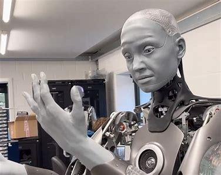

Diferentes tipos de robôs
Conheça os diferentes tipos de robôs e suas aplicações no mundo moderno.
1. Robôs Industriais:
Aplicações
- Linhas de montagem automotivas: Soldagem, pintura, montagem de peças.
- Manufatura: Embalagem, paletização, controle de qualidade.
- Indústria eletrônica: Montagem de componentes, testes de produtos.
- Precisão, repetibilidade, capacidade de operar em ambientes perigosos.
2. Robôs de Serviço:
Aplicações
- Limpeza doméstica: Aspiradores de pó robóticos, cortadores de grama automáticos.
- Logística: Robôs de armazém, drones de entrega.
- Saúde: Robôs de assistência a idosos, robôs de telepresença.
- Autonomia, capacidade de navegação, interação com humanos.
3. Robôs Médicos:
Aplicações
- Cirurgia assistida por robôs: Procedimentos minimamente invasivos, maior precisão.
- Reabilitação: Exoesqueletos, robôs de terapia.
- Farmácia: Dispensação de medicamentos, preparação de doses.
- Precisão cirúrgica, controle preciso, esterilidade.
4. Robôs de Exploração:
Aplicações
- Exploração espacial: Rovers em Marte, sondas em outros planetas.
- Exploração submarina: Veículos operados remotamente (ROVs), veículos submarinos autônomos (AUVs).
- Exploração de áreas perigosas: Desativação de bombas, inspeção de usinas nucleares.
- Resistência a ambientes extremos, autonomia, capacidade de coleta de dados.
5. Robôs Colaborativos (Cobots):
Aplicações
- Trabalho conjunto com humanos em linhas de produção.
- Auxílio em tarefas repetitivas e ergonômicas.
- Inspeção de qualidade em pequenas e médias empresas.
- Segurança, facilidade de programação, capacidade de adaptação.
6. Robôs Humanoides:
Aplicações
- Pesquisa em inteligência artificial e robótica.
- Potencial para assistência a humanos em tarefas complexas.
- Entretenimento e educação.
- Aparência e movimentos humanos, capacidade de interação social.
7. Drones (Veículos Aéreos Não Tripulados - VANTs):
Aplicações
- Fotografia e filmagem aérea.
- Agricultura de precisão: Monitoramento de plantações, pulverização de defensivos.
- Segurança e vigilância.
- Entrega de encomendas.
- Mobilidade aérea, capacidade de coleta de dados, versatilidade.